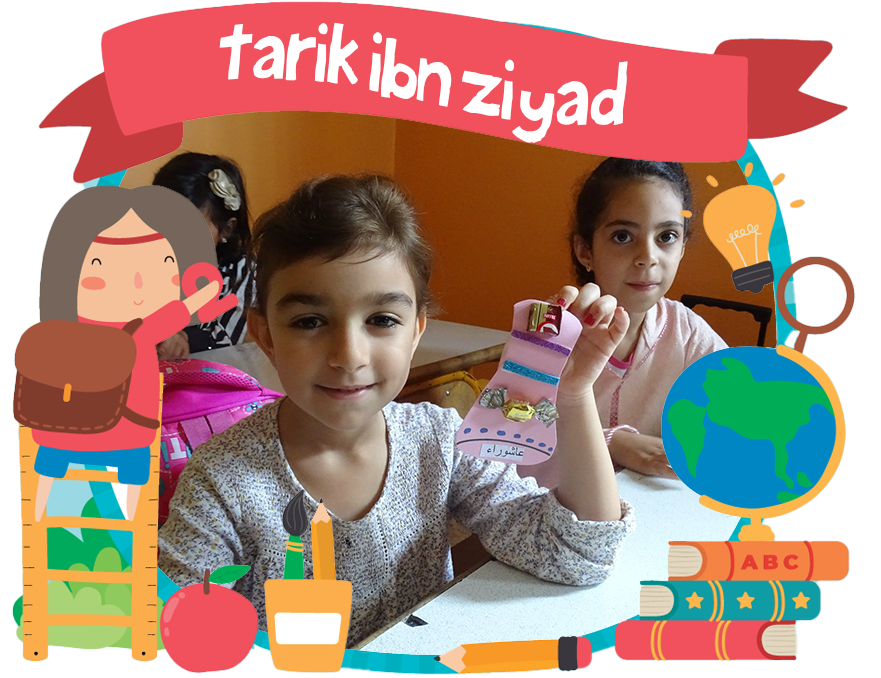
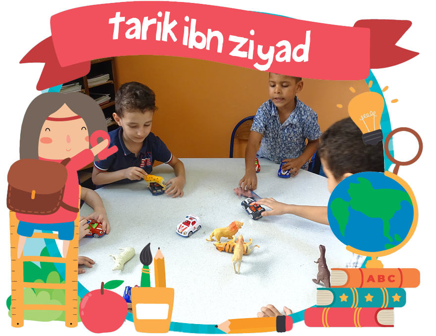

Etablissement Scolaire
TARIK IBN ZIYAD
Située à Ksar El Kebir, Maroc, l'école Tarik Ibn Ziyad se distingue par
son engagement en faveur d'une éducation de qualité, enracinée dans les valeurs marocaines et
ouverte aux horizons culturels.
Nous croyons fermement en un cadre scolaire où chaque élève peut s’épanouir, apprendre et
grandir tout en explorant ses capacités et ses passions uniques.
Notre mission est de cultiver un environnement stimulant, propice au développement personnel et
académique, permettant à chaque élève de réaliser son plein potentiel.